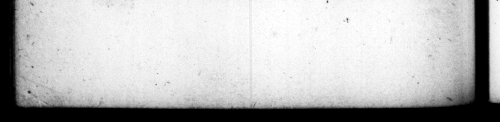

N ab do i - 5 . , worn = _ \ 7% 3 2 "©. Tas 5 7 4 : * * ' 3 — . 4 31. Non in iis re damnoquam in Domum à Palario Eſquilias uſfecit. Quam mo Trantonamy mox, incendio abſumtam, reſtitutamque, Auream —— De cujus ipatio atque cultu ſuffeceric hoe — Veſtibulum ejus fuit, in quo coloſſus cencum vitzinti pedum ſtaret ipius effigie: tanta laxitas, ut porticus tri2 milliarias baberer : item um maris inſtar, ircumſeptum mditiciis ad urbium ſpeciem. Rura infuper arvis argne vinetis & paicuis, ſilviſque, varia cum — omnis generis pecudum ac fe— In ceteris partibus eta auro lira, diſtincta erant. \Conationes ueatæ tabulis ebuwneis verſatilibus, ta deſuper ſpargerentur. Præeipua retur : balinea marinis & bulis Aluentes aquis. Ejuſmodi domum cum abloluam gedicarety hactenus comproba vit, ut ſe: diceret quaſi haminem tandem habitare cæpiſſe. Prætereu inehoabat piſcmamà Miſeno ad Avernum lacum, contectam, port icibus concluſam, quo quidquid rotis Bajis calidax wot efſet converteretur, Foſſam ab Averno Oſtiam uſque, ut navibus nec tamen mari uetur, longitudinis per centum ſexaginta millia, latitudinis, qua contrariæ quinqueremes commearent. Quoaum r jendorum —— quoo ubique eſſet cuodiez in E deportari, etiam fſcclere convictos, non nil: ad ou damnari, __ rum — Ad hunc impen rorem ſuper fiduciam imperii, etiam ſpe quadam reC. UBT. RANG unionumque cunchis ut fores, fiſtulatis, ut unguen- i cbenatiouum rotunda, perpetuo diebus ac noctibug er mundi circumagecarried on from Miſene to the MN. | banks of cars paſs one another. K * 1. He was id mot more Wedig al 3 building. 2 an reacted from the Paloy ole Eſquilie, which be at firſt called Tran. ſicoria : 2 it was burnt down _ Toe e golden houſe, ; con» eneſs and raps — it = to ſay 2 The porch was ſo high, that these in it 4 monſtrous flarue of bimſelf, an hundred and twenty foot in hei 1 ans 1 2 that it th, «nd @ þ 4727 — within the compaſs of parts of it over 2 74215 2 city, Bete, 7 vineyards, 2 4 299 number FT both wild and wierd wit _ ly adorned. with 3 2 855 ly Wit . 4 = arch d, with vaul 8 2 LES ing of the — being finiſhed, he gave it 4 probation in theſe words, now got a 471 fit for 55 27 85k li live in. He likewiſe begun the be warm from Baie, which be dewalt nian lake, under a ny and inc within . 4s 4 oy — oP paſſin e dene cho two places by 22 Yon ww Yet not fe op — carr miles in Lint * of 4 rg ry, ſufficient to let ſhips with five the carrying on of which ordered A Fro ſamert, s & ever) 5 brought intoltaly ; and that ſuch as wee con xi Hed of the moſt bentous crimes, only be condemned to work therein. He was encouraged to all this wild pent ina „ Ac v4 «& =« >. © a J. —T ] rm 7ST *&& 2 rr XX FF FF > xF
